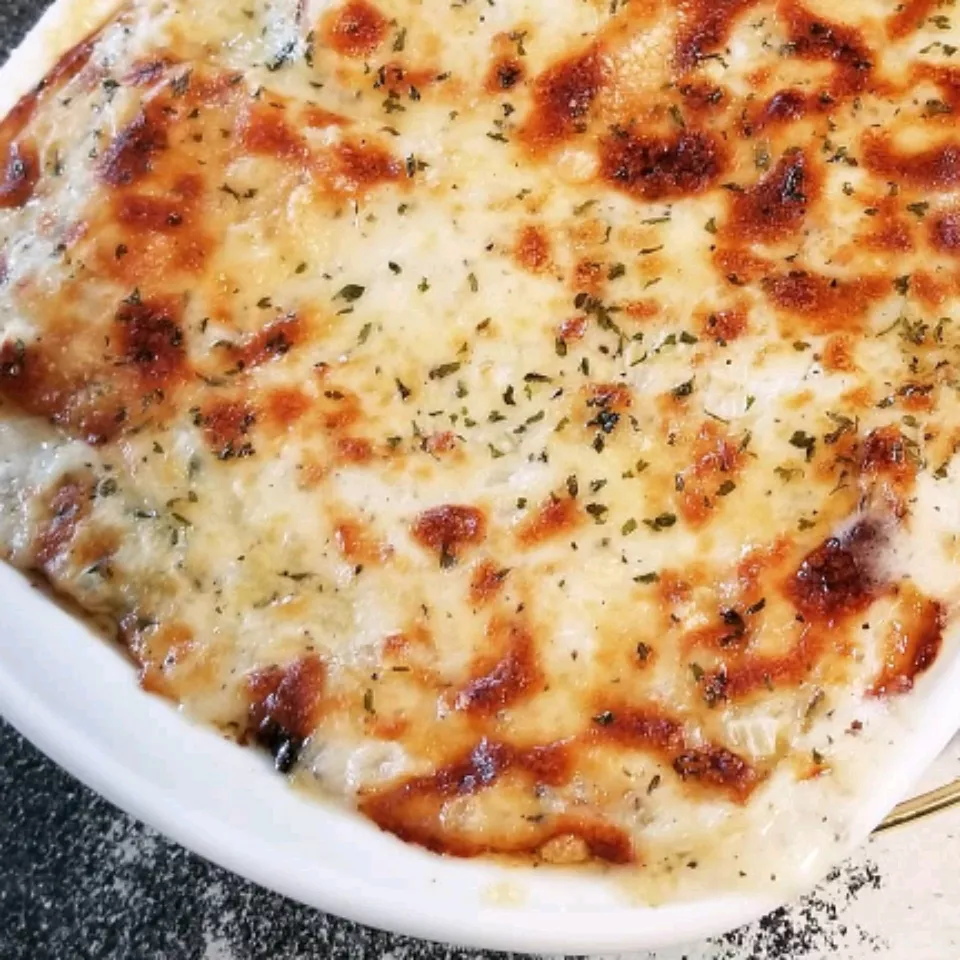

White Cheese Chicken Lasagna

Chicken lasagna with spinach and a creamy white cheese sauce,
great for any kind of potluck!
This white chicken lasagna recipe is a satisfying and crowd-pleasing twitst on a
classic italian favorite.
25 mins
50 mins
1 hr 15 mins
12
Ingredients
These are the ingredients you'll need to make this white chicken lasagne recipe:
-
Noodles: 9 lasagna noodles
... of course, you'll need lasagna noodles. -
Butter: ½ cup butter
... cook the onion and garlic in butter. -
Vegetables: 1 onion, chopped
... you'll need an onion and two packages of frozen spinach. -
Garlic: 1 clove garlic, minced
... cook a clove of minced garlic with the onion for a more intense flavor. -
Flour: ½ cup all-purpose flour
... all-purpose flour thickens the sauce. -
Broth: 2 cups chicken broth
... use store-bought chicken broth or make your own at home. -
Milk: 1 ½ cups milk
... whole milk is best for this decadent white sauce. -
Seasonings & Herbs:
1 teaspoon salt,
1 teaspoon dried basil
1 teaspoon dried oregano
½ teaspoon ground black pepper
1 tablespoon chopped fresh parsley.
and 2 (10 ounce) packages frozen chopped spinach, thawed and drained
... this chicken lasagna is seasoned with salt, dried basil, dried oregano, black pepper, and fresh parsley. -
Cheeses: 2 cups ricotta cheese
4 cups shredded mozzarella cheese, divided
1 cup grated Parmesan cheese, divided
... you'll need mozzarella, Parmesan, and ricotta cheeses. -
Chicken: 2 cups cubed, cooked chicken meat
... this white chicken lasagna is a great use for leftover chicken!
Directions
Step 1
Preheat the oven to 350 degrees F (175 degrees C).Step 2
Bring a large pot of lightly salted water to a boil.Add lasagna noodles and cook for 8 to 10 minutes or until al dente; drain and rinse with cold water.
Step 3
Meanwhile, melt butter in a large saucepan over medium heat; stir in onion and garlic.Whisk in flour until lightly browned and onion is tender, about 2 minutes.
Add chicken broth, milk, and salt; cook, whisking continuously, for 1 minute.
Step 4
Stir in 2 cups mozzarella and 1/4 cup Parmesan until well combined.Season with basil, oregano, and black pepper; remove from heat and set aside.
Step 5
Spread 1/3 of the sauce mixture in the bottom of a 9x13-inch baking dish.Layer with 3 lasagna noodles, ricotta, and chicken. Arrange 3 lasagna noodles over the chicken
and layer with 1/3 of the sauce mixture, spinach, remaining 2 cups mozzarella, and 1/2 cup Parmesan.
Arrange remaining noodles over cheese and spread remaining sauce evenly over noodles.
Sprinkle with parsley and remaining 1/4 cup Parmesan.
Step 6
Bake in the preheated oven for 35 to 40 minutes.  hope you enjoy it :3Calories
Fat
Carbs
Protein